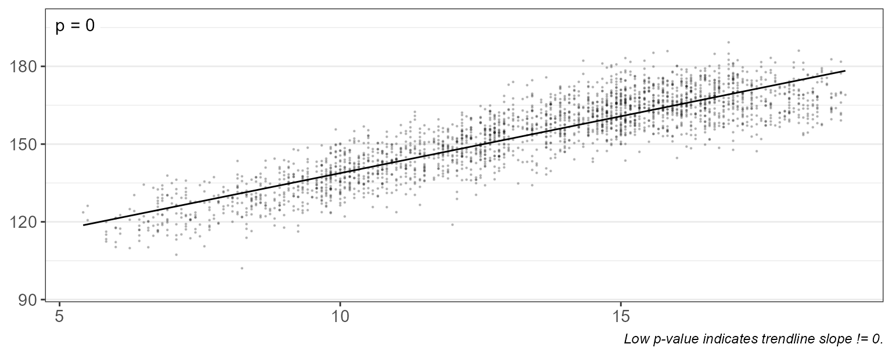
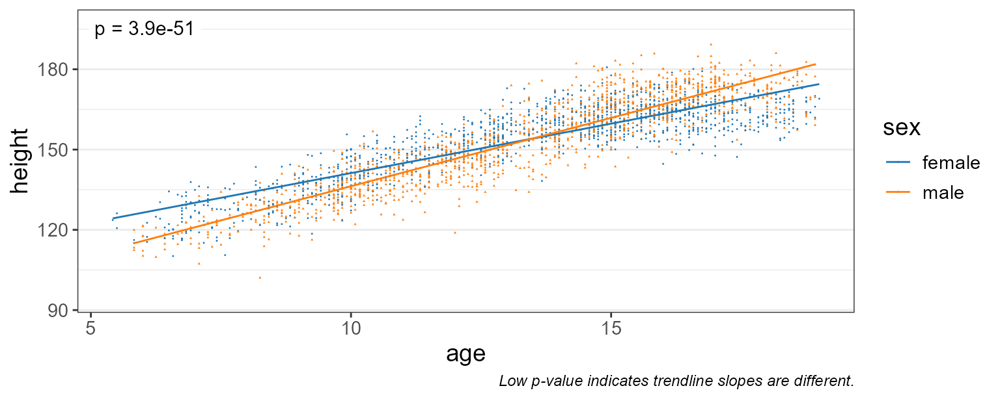
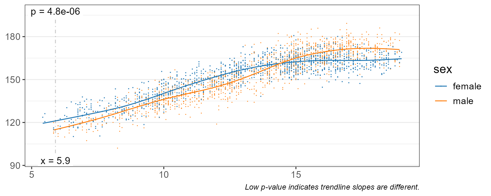
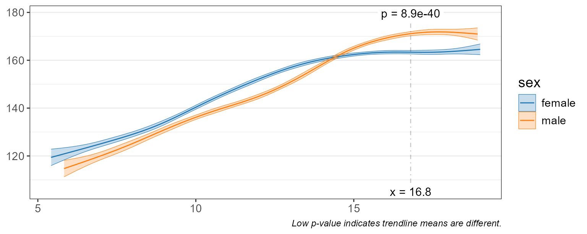
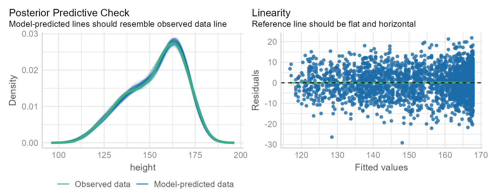
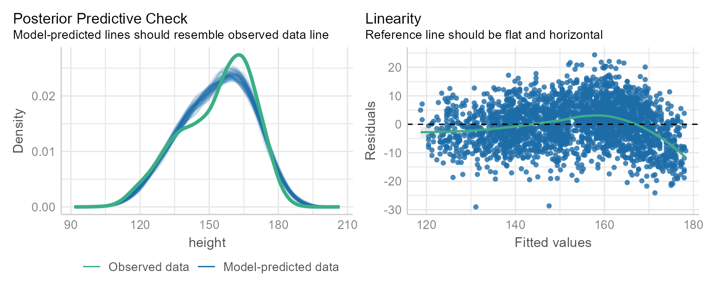
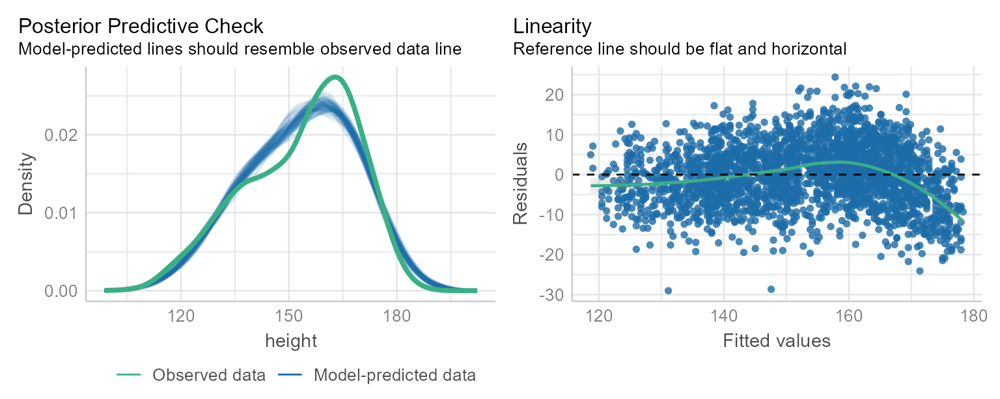
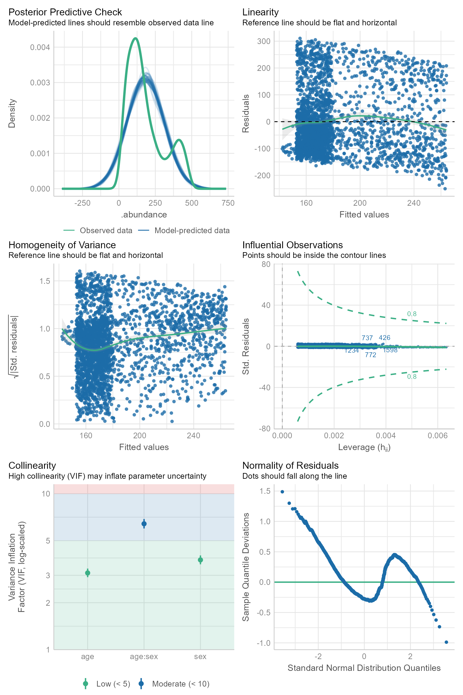
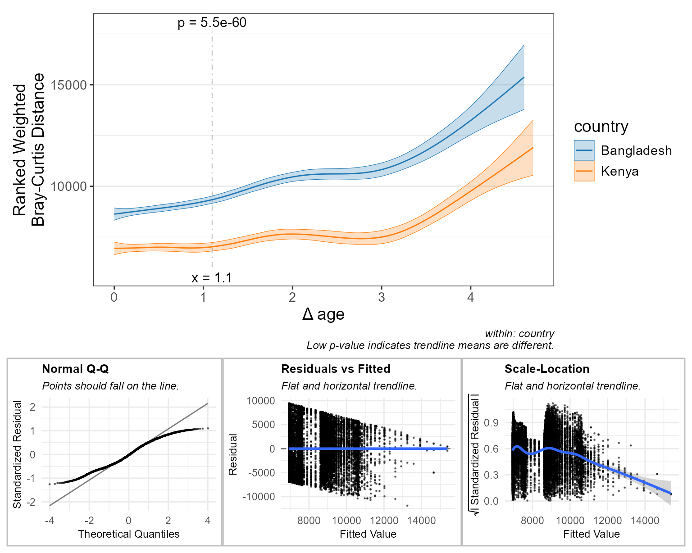
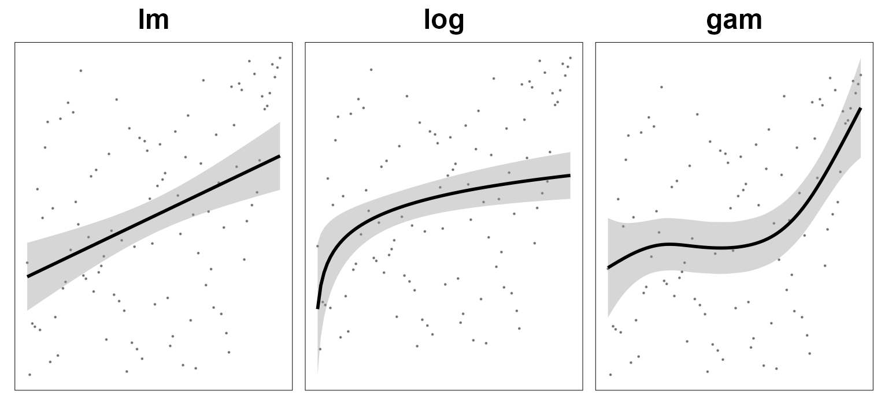

Introduction
Regression functions are provided for examining the association between two continuous variables.
Examples of continuous variables are alpha diversity metrics, taxa abundances, and sample metadata such as age or BMI. These all have a numeric range in which a data point can take on any value in that range.
Children Heights
To start with a simple example, consider the children
dataset from the R package npregfast. It contains the age
and height measurements of 2500 children aged 5 through 19 years, split
by sex (1292 females and 1208 males).
head(npregfast::children)
#> sex height age
#> 1 male 150.77 13.25
#> 2 female 170.59 14.17
#> 3 female 167.31 15.17
#> 4 female 165.72 16.58
#> 5 female 171.67 15.17
#> 6 female 143.74 12.67Height vs Age
The most straight forward plot is putting ‘age’ on the x-axis, ‘height’ on the y-axis, and drawing a straight line that minimizes the distances between the observed data points and the linear trendline.
With this plot, we’re testing the hypothesis “as you get older, your height changes”.
stats_corrplot(
df = npregfast::children, # dataset
x = 'age', # x-axis variable
y = 'height', # y-axis variable
layers = 'tp', # show trendline and points
test = 'emtrends', # run stats on the slope
pt.size = 0.2, # make points smaller
pt.alpha = 0.2 ) # and semi-transparent
As you’d expect, the trendline’s slope is positive (p-value = 0). Therefore it’s safe to say that height changes with age.
Grouped by Sex
Is the rate of growth influenced by sex? We can add
stat.by = "sex" to draw separate lines for each sex.
stats_corrplot(
df = npregfast::children, # dataset
x = 'age', # x-axis variable
y = 'height', # y-axis variable
stat.by = 'sex', # statistical groups
layers = 'tp', # show trendline and points
test = 'emtrends', # run stats on the slopes
pt.size = 0.2, # make points smaller
pt.alpha = 0.2 ) # and semi-transparent
If you look at the captions of the last two plots, you’ll notice that
the p-value test automatically switches. When
stat.by = NULL, test = "emtrends" will test if
the slope is zero. When stat.by is not NULL,
test = "emtrends" will test if the trendline slopes are
equal.
Here, a p-value of 3.9e-51 indicates that males and females do have different growth rates.
Smoothed Fit
Linear trendlines probably aren’t the best way to model growth rates.
Setting fit = "gam" will use a generalized additive model
which fits several sub-ranges of age with independent splines.
stats_corrplot(
df = npregfast::children, # dataset
x = 'age', # x-axis variable
y = 'height', # y-axis variable
stat.by = 'sex', # statistical groups
fit = 'gam', # smoothed trendline
layers = 'tp', # show trendline and points
test = 'emtrends', # run stats on the slopes
pt.size = 0.2, # make points smaller
pt.alpha = 0.2 ) # and semi-transparent
This gives us a much better idea of the moving average over time.
We still have test = "emtrends", so the p-value is
reported where the differences is slope is most significant - in this
case, at age = 5.83 years.
Difference in Means
Let’s set test = "emmeans" instead, and show the 95%
confidence interval instead of all the data points.
stats_corrplot(
df = npregfast::children, # dataset
x = 'age', # x-axis variable
y = 'height', # y-axis variable
stat.by = 'sex', # statistical groups
fit = 'gam', # smoothed trendline
layers = 'tc', # show trendline with conf. int.
test = 'emmeans' ) # run stats on the means
Differences in height are most significant at age = 16.8 (p-value = 8.9e-40).
Stats Table
The complete statistical output is attached to the returned plot as
$stats. Though not covered in this article, you can also
access $code and $stats$code to see the
ggplot2 plotting command and statistics R code, respectively.
p <- stats_corrplot(
df = npregfast::children, # dataset
x = 'age', # x-axis variable
y = 'height', # y-axis variable
stat.by = 'sex', # statistical groups
fit = 'gam', # smoothed trendline
layers = 'tc', # show trendline with conf. int.
test = 'emmeans' ) # run stats on the means
p$stats
#> # Model: gam(height ~ s(age, by = sex, bs = "cs") + sex, method = "REML")
#> # A tibble: 1 × 14
#> age sex .mean.diff .h1 .p.val .adj.p .effect.size .se .n .df
#> <dbl> <fct> <dbl> <fct> <dbl> <dbl> <dbl> <dbl> <int> <int>
#> 1 16.8 femal… -7.73 != 0 8.88e-40 8.88e-40 -1.21 0.575 2500 2485
#> # ℹ 4 more variables: .t.ratio <dbl>, .aic <dbl>, .bic <dbl>, .loglik <dbl>This is the same table you can generate with the stats_table() function, and that reference page has an explanation of each field.
Babies Dataset
Now that we have the concepts down, let’s switch to the
babies dataset included with rbiom. It has microbiome data
from 2,684 stool samples from 12 infants. The original Nature article by
Eric J. de Muinck and Pal Trosvik for this data set is available online
for free at Individuality
and Convergence of the Infant Gut Microbiota During the First Year of
Life.
babies
#> DailyBaby (2018-06-08)
#> Data from [Muinck,
#> 2018](https://www.nature.com/articles/s41467-018-04641-7).
#> Retrieved from
#> [MicrobiomeHD](https://doi.org/10.1038/s41467-017-01973-8).
#> -----------
#> 2684 Samples: SRR7044380, SRR7058817, SRR7039319, ...
#> 506 OTUs: ASV085, ASV022, ASV251, ..., and ASV500
#> 8 Ranks: .otu, Kingdom, Phylum, ..., and Species
#> 10 Metadata: .sample, Subject ID, Sex, ...
#> Tree: <absent>
glimpse(babies)
#> Rows: 2,684
#> Columns: 10
#> $ .sample <chr> "SRR7044380", "SRR7058817", "SRR7039319"…
#> $ `Subject ID` <fct> ID3, ID12, ID1, ID6, ID8, ID11, ID11, ID…
#> $ Sex <fct> Female, Female, Female, Male, Female, Fe…
#> $ `Age (days)` <dbl> 255, 31, 222, 41, 79, 228, 52, 32, 178, …
#> $ `Child's diet` <fct> Breast milk, Breast milk and formula, Br…
#> $ `Sample collection` <fct> Stored in alcohol, Frozen upon collectio…
#> $ `Antibiotic exposure` <fct> No, No, No, No, No, No, No, No, No, No, …
#> $ `Antifungal exposure` <fct> No, No, No, No, No, No, No, No, No, No, …
#> $ `Delivery mode` <fct> Vaginal, Vaginal, Vaginal, Vaginal, Vagi…
#> $ `Solid food introduced (Age)` <dbl> 165, 122, 186, 121, 247, 173, 173, 121, …We’ll use the age, sex,
delivery, and subject metadata fields in the
following examples. age is a continuous variable while the
rest are categorical.
Normality
Many common statistical tools rely on the assumption that your data is normally distributed.
In the children dataset, this assumption is accurate.
performance::check_model(
check = c("pp_check", "linearity"),
x = mgcv::gam(
data = npregfast::children,
formula = height ~ s(age, bs = 'cs'),
method = 'REML' ) )
However, microbiome data is usually non-normally distributed.
performance::check_model( check = c(“pp_check”, “linearity”), x = mgcv::gam( data = adiv_table(babies) %>% rename(age = ‘Age (days)’), formula = .diversity ~ s(age, bs = ‘cs’), method = ‘REML’ ) )
# Draft Text
You can use the formula `height ~ age` as a way of saying "as you get older, your height changes". You can get fancier using a formula like `height ~ log(age)` which says that larger values of age have less of an effect on height, or `height ~ log(age) * sex` which also accounts for different growth trends of males and females. If you're of the opinion that height and age are linked, but not linearly or logarithmically, you can write `height ~ s(age)` to partition age into sub-ranges and fit splines to each independently.
That's as complex as it gets for rbiom! And again, rbiom insulates you from needing to write any formulas yourself. All you need to do is point the functions to the relevant variables.
<img src="D:/Dropbox/Baylor/GitHub/rbiom/docs/articles/regression_files/figure-html/unnamed-chunk-10-1.png" width="768" />
## Models and Trendlines
Before we go further, let's define a couple terms.
* **Model Family** - A generalized equation, e.g. `y = mx + b`.
* **Fitted Model** - An equation for a specific line, e.g. `y = 1.2x + 10`.
* **Coefficients** - In the above fitted model, `1.2` and `10`.
For more on this topic, see the online book [R for Data Science](https://r4ds.had.co.nz/model-basics.html) by Hadley Wickham and Garrett Grolemund.
You can tell rbiom which model family to use with the `fit` parameter:
* `fit = "lm"` - Fit a linear `y ~ x` model.
* `fit = "log"` - Fit a logarithmic `y ~ log(x)` model.
* `fit = "gam"` - Fit a generalized additive `y ~ s(x)` model.
One important thing to know about rbiom is that **model fitting is done AFTER splitting the dataset**. For example, if your formula is `height ~ age * sex`, then the data will be split into two datasets - one of just males and one of just females. Each new dataset and the formula of `height ~ age` is passed on to the underlying statistical f
## Optimal Model/Trendline
So, how do you decide whether to use a linear, logarithmic, or smoothed trendline?
Looking at the different fits with your eye is an excellent place to start. There are also some metrics and charts to help you to really evaluate the goodness of fit.
Below (and in the figures above) data is sourced from the R package dataset `npregfast::children`, which has the age and height measurements of 2500 children aged 5 to 19 years, split by sex (1292 females and 1208 males).
To start, we can use [broom::glance()] or rbiom's `stats_table()` to calculate R<sup>2</sup>, AIC, and other goodness of fit metrics.
```r
children <- as_tibble(npregfast::children)
glimpse(children)
#> Rows: 2,500
#> Columns: 3
#> $ sex
[3m
[38;5;246m<fct>
[39m
[23m male, female, female, female, female, female, female, male, fem…
#> $ height
[3m
[38;5;246m<dbl>
[39m
[23m 150.77, 170.59, 167.31, 165.72, 171.67, 143.74, 157.93, 157.73,…
#> $ age
[3m
[38;5;246m<dbl>
[39m
[23m 13.25, 14.17, 15.17, 16.58, 15.17, 12.67, 12.75, 17.17, 16.67, …
# Using broom::glance() directly:
models <- with(children, list(
'height ~ age' = stats::lm(height ~ age),
'height ~ log(age)' = stats::lm(height ~ log(age)),
'height ~ s(age)' = mgcv::gam(height ~ s(age, bs = 'cs'), method = 'REML') ))
plyr::ldply(models, broom::glance) %>%
as_tibble() %>%
select(model = .id, r.squared, adj.r.squared, logLik:BIC, p.value)
#>
[38;5;246m# A tibble: 3 × 7
[39m
#> model r.squared adj.r.squared logLik AIC BIC p.value
#>
[3m
[38;5;246m<chr>
[39m
[23m
[3m
[38;5;246m<dbl>
[39m
[23m
[3m
[38;5;246m<dbl>
[39m
[23m
[3m
[38;5;246m<dbl>
[39m
[23m
[3m
[38;5;246m<dbl>
[39m
[23m
[3m
[38;5;246m<dbl>
[39m
[23m
[3m
[38;5;246m<dbl>
[39m
[23m
#>
[38;5;250m1
[39m height ~ age 0.770 0.770 -
[31m
[4m8
[24m58
[39m
[31m2
[39m
[31m.
[39m
[4m1
[24m
[4m7
[24m171.
[4m1
[24m
[4m7
[24m188. 0
#>
[38;5;250m2
[39m height ~ log(age) 0.783 0.783 -
[31m
[4m8
[24m50
[39m
[31m7
[39m
[31m.
[39m
[4m1
[24m
[4m7
[24m020.
[4m1
[24m
[4m7
[24m037. 0
#>
[38;5;250m3
[39m height ~ s(age)
[31mNA
[39m
[31mNA
[39m -
[31m
[4m8
[24m40
[39m
[31m2
[39m
[31m.
[39m
[4m1
[24m
[4m6
[24m821.
[4m1
[24m
[4m6
[24m872.
[31mNA
[39m
# Or equivalently with stats_table()
stats_table(children, resp = "height", regr = "age", fit = "lm") %>%
select(.r.sqr:.fit.p)
#>
[38;5;246m# Model: lm(height ~ age)
[39m
#>
[38;5;246m# A tibble: 1 × 6
[39m
#> .r.sqr .adj.r .aic .bic .loglik .fit.p
#>
[3m
[38;5;246m<dbl>
[39m
[23m
[3m
[38;5;246m<dbl>
[39m
[23m
[3m
[38;5;246m<dbl>
[39m
[23m
[3m
[38;5;246m<dbl>
[39m
[23m
[3m
[38;5;246m<dbl>
[39m
[23m
[3m
[38;5;246m<dbl>
[39m
[23m
#>
[38;5;250m1
[39m 0.770 0.770
[4m1
[24m
[4m7
[24m171.
[4m1
[24m
[4m7
[24m188. -
[31m
[4m8
[24m58
[39m
[31m2
[39m
[31m.
[39m 0Here’s how to interpret this output:
-
.r.sqr- Coefficient of Determination (R2); range: 0-1, lower is better. Percent of variation explained by the model. -
.adj.r- R2, taking degrees of freedom into account. -
.aic- Akaike Information Criterion; lower is better. Preferred when using model for prediction. -
.bic- Bayesian Information Criterion; lower is better. Preferred when using model for interpretation. -
.loglik- Log-Likelihood (negative values); higher values (closer to zero) are better. -
.fit.p- P-value for observing this fit by chance; range: 0-1, lower is better.
Based on these metrics, the smoothed trendline is optimal.
We can also visualize the fit with the performance R
package. Below, compare the graphs for the linear vs smoothed
trendline.
with(children, stats::lm(height ~ age)) %>%
performance::check_model(check = c("pp_check", "linearity"))
with(children, mgcv::gam(height ~ s(age, bs = 'cs'), method = 'REML')) %>%
performance::check_model(check = c("pp_check", "linearity"))
Omitting the checks = argument will generate even more
plots, and adding in the * sex interaction term will
produce even more plots, but I’ll leave that as an exercise for the
reader. Just an FYI - the gam formula with an interaction will look like
height ~ s(age, by=sex, bs='cs') + sex. Aren’t you glad
that rbiom doesn’t need you to know formulas?
From these checks we can conclude that our model fits the
children dataset very well and can give credence to any
conclusions reached by interpretations of that model.
stats_table()
We’ll use stats_table() in this article.
stats_table() is called by [adiv_stats()],
[bdiv_stats()], and [taxa_stats()], which in turn are called by the
*_corrplot() plotting functions. Therefore, once you
understand how to use stats_table(), you’ll
understand all the other regression functions too!
Here are the first few arguments for stats_table(), explained in more detail than on the reference page.
-
df- A data.frame with all your data. Typically, this will be the data.frame returned by [adiv_stats()], [bdiv_stats()], or [taxa_stats()], but a custom-made one is fine too. It doesn’t even have to be microbiome data. A nice thing about the_stats()functions is they set e.g.attr(df, 'response') <- ".abundance"so you don’t need to worry about settingstats_table(resp = ). -
regr- The independent variable. Such as"age"in thebabiesdataset. -
resp- The dependent variable. Will be".abundance",".diversity", or".distance"if calculated by the_stats()functions, or"height"from the earlier section.
As this article goes on, we’ll go over how and when to use additional stats_table() arguments.
Linear Trends
Let’s explore Firmicutes abundance in the babies
dataset.
df <- taxa_table(babies, rank = "Phylum", taxa = "Firmicutes") %>%
select(
.sample, .taxa, .abundance,
age = `Age (days)`,
sex = Sex,
delivery = `Delivery mode`,
subject = `Subject ID` )
df
#> # A tibble: 2,684 × 7
#> .sample .taxa .abundance age sex delivery subject
#> <chr> <fct> <dbl> <dbl> <fct> <fct> <fct>
#> 1 SRR7044380 Firmicutes 132 255 Female Vaginal ID3
#> 2 SRR7058817 Firmicutes 11 31 Female Vaginal ID12
#> 3 SRR7039319 Firmicutes 55 222 Female Vaginal ID1
#> 4 SRR7053418 Firmicutes 397 41 Male Vaginal ID6
#> 5 SRR7054009 Firmicutes 103 79 Female Vaginal ID8
#> # ℹ 2,679 more rowsThe simplest way to find the abundance is to take the average across all samples.
mean(df$.abundance)
#> [1] 183.3104
stats_table(df)$.mean
#> [1] 183.3104Regression comes into play when we suspect that abundance changes over time.

stats_table(df, regr = "age", fit = "lm", test = "emtrends") %>%
select(.slope, .h1, .p.val)
#> # Model: lm(.abundance ~ age)
#> # A tibble: 1 × 3
#> .slope .h1 .p.val
#> <dbl> <fct> <dbl>
#> 1 -0.127 != 0 0.000272Above, we’re modeling .abundance ~ age and using
[emmeans::emtrends()] behind the scenes see if the resulting trendline
is non-horizontal.
Recall from your statistic classes that you are testing a null hypothesis H0 against an alternate hypothesis H1. In this case our null hypothesis is that the trendline is flat (slope = 0), indicating no relationship between age and Firmicutes abundance. The p-value is the probability that the null hypothesis is correct (a p-value of 0.6 is interpreted as a 60% chance that there’s no relationship between age and abundance). When the p-value is below a certain value (usually 0.05) we accept the alternative hypothesis instead - in this case that there IS a relationship between age and Firmicutes abundance.
In the output we see that .slope is -0.127 and our
alternative hypothesis (.h1) of .slope != 0 is
acceptable since .p.val is less than 0.05. Therefore, the
mean abundance of Firmicutes decreases over time in babies.
The un-select()ed output contains columns for confidence
intervals, goodness of fit measures, and intermediary statistic values
that we’ll get to later.
Data Normality
In statistics, it is crucial to know if your data is normally distributed.
The performance R package has excellent utilities for
assessing normality and similar characteristics.
with(df, stats::lm(.abundance ~ age * sex)) %>%
performance::check_model()
The “Normality of Residuals” plots clearly show we’re dealing with non-normal data. To handle this, we need to use non-parametric methods or manually apply a rank transformation.
df$rt_abundance <- rank(df$.abundance)
with(df, stats::lm(rt_abundance ~ age * sex)) %>%
performance::check_model()
Trends and Engines
Now’s a good time to explain two more stats_table()
parameters: fit and test.
fit is the shape of the trendline you want to fit (see
intro section). Options are: * 'lm' - Linear (straight
line), using stats::lm(y ~ x). * 'log' -
Logarithmic, using stats::lm(y ~ log(x)). *
'gam' - Generalized additive model, using
mgcv::gam(y ~ s(x, bs = 'cs'), method = 'REML').
test is the top-most operator the model. Options are: *
'emmeans' - To compute means. * 'emtrends' -
To compute trendline slopes.
Marginal Means
The default test for stats_table() is
'emmeans', which computes estimated marginal means (EMMs),
also known as least-squares means, using the [emmeans::emmeans]
package.
Generally speaking, EMMs are means extracted from a statistical model. This allows EMMs to take into account more complex associations and produce confidence intervals in addition to estimates of the mean. For a more information on EMMs, these resources are recommended:
Model Selection
As per our discussion of age vs height, a straight (linear) trendline might not be the best fit for a dataset.
To evaluate different models, change the fit parameter
and look at the resultant goodness of fit values.
stats_table(df, regr = "age", test = "emtrends", fit = "lm") %>%
select(.r.sqr:.fit.p)
#> # Model: lm(.abundance ~ age)
#> # A tibble: 1 × 6
#> .r.sqr .adj.r .aic .bic .loglik .fit.p
#> <dbl> <dbl> <dbl> <dbl> <dbl> <dbl>
#> 1 0.00493 0.00456 33519. 33537. -16757. 0.000272
stats_table(df, regr = "age", test = "emtrends", fit = "log") %>%
select(.r.sqr:.fit.p)
#> # Model: lm(.abundance ~ log(age))
#> # A tibble: 1 × 6
#> .r.sqr .adj.r .aic .bic .loglik .fit.p
#> <dbl> <dbl> <dbl> <dbl> <dbl> <dbl>
#> 1 0.00232 0.00195 33526. 33544. -16760. 0.0125
stats_table(df, regr = "age", test = "emtrends", fit = "gam") %>%
select(.aic:.loglik)
#> # Model: gam(.abundance ~ s(age, bs = "cs"), method = "REML")
#> # A tibble: 1 × 3
#> .aic .bic .loglik
#> <dbl> <dbl> <dbl>
#> 1 33520. 33542. -16757.These values are calculated by the [broom::glance()] function.
-
.r.sqr- Coefficient of Determination (R2); range: 0-1, lower is better. Percent of variation explained by the model. -
.adj.r- R2, taking degrees of freedom into account. -
.aic- Akaike Information Criterion; lower is better. Preferred when using model for prediction. -
.bic- Bayesian Information Criterion; lower is better. Preferred when using model for interpretation. -
.loglik- Log-Likelihood (negative values); higher values (closer to zero) are better. -
.fit.p- P-value for observing this fit by chance; range: 0-1, lower is better.
Based on these metrics, the fit = "lm" model is
optimal.
Means at Specific Timepoints
The previous section showed us that Firmicutes abundance decreases
with age (slope = -0.127). We can use stats_table(at = ...)
to find the estimated marginal mean of .abundance at any
value of age.
stats_table(df, regr = "age", at = c(30, 90, 150, 210)) %>%
select(age, .mean)
#> # Model: lm(.abundance ~ age)
#> # A tibble: 4 × 2
#> age .mean
#> <dbl> <dbl>
#> 1 30 194.
#> 2 90 187.
#> 3 150 179.
#> 4 210 171.Pairwise Contrasts
Let’s check if the abundance of Firmicutes is different for babies born vaginally vs via Cesarean.
stats_table(df, regr = "age", stat.by = "delivery", at = c(30, 90, 150, 210)) %>%
select(age, delivery, .mean.diff, .h1, .effect.size, .p.val, .adj.p)
#> # Model: lm(.abundance ~ age * delivery)
#> # A tibble: 4 × 7
#> age delivery .mean.diff .h1 .effect.size .p.val .adj.p
#> <dbl> <fct> <dbl> <fct> <dbl> <dbl> <dbl>
#> 1 30 Cesarean - Vaginal -33.3 != 0 -0.268 0.000167 0.000666
#> 2 90 Cesarean - Vaginal -17.4 != 0 -0.140 0.00314 0.00628
#> 3 210 Cesarean - Vaginal 14.6 != 0 0.117 0.121 0.161
#> 4 150 Cesarean - Vaginal -1.40 != 0 -0.0112 0.820 0.820Here we see why the at parameter is so important; at day
30, the difference is very significant, while at day 150, the difference
is negligible.
A few new columns are introduced here. .mean.diff is the
differences in mean abundance. The negative values indicate there is
more Firmicutes in the babies delivered vaginally. See how the pair is
listed as Cesarean - Vaginal? You can think “Cesarean
abundance” minus “Vaginal abundance”. In this table,
the .h1 column tells us the alternate hypothesis is that
the .mean.diff is not equal to zero.
The .adj.p column is the .p.val corrected
for multiple comparisons. Since we looked at four timepoints, the
chances of encountering a randomly significant difference is higher than
if we looked at just one timepoint. The default
stats_table(p.adj = 'fdr') uses the Benjamini &
Hochberg (1995) correction algorithm.
The .effect.size column gives us an idea of the
practical significance of .mean.diff. Calculated as
.mean.diff / standard_deviation, a rough interpretation is
0.2 = small effect, 0.5 = moderate effect, and 0.8 = large effect.
Considering this, we can say that babies born vaginally had significantly more Firmicutes in their stool than babies born via Cesarean. However, this difference is fairly small.
Pairwise Trends
The above differences were actually the result of calculating separate models for each level of delivery. These underlying trendlines can be interesting in their own right as well. The slopes might be different, or they might be the same but with different y-intercepts. We can find out like this:
stats_table(df, regr = "age", stat.by = "delivery", test = "emtrends") %>%
select(delivery, .slope.diff, .h1, .p.val)
#> # Model: lm(.abundance ~ age * delivery)
#> # A tibble: 1 × 4
#> delivery .slope.diff .h1 .p.val
#> <chr> <dbl> <fct> <dbl>
#> 1 Cesarean - Vaginal 0.266 != 0 0.000995This shows us that the linear trendline slopes are significantly
different. The new column .slope.diff is the difference in
slopes for the two delivery group trendlines.
But what if we want to know the slope of those two trendlines by
themselves? We can find those by changing
stats_table(stat.by = ...) to
stats_table(split.by = ...).
stats_table(df, regr = "age", split.by = "delivery", test = "emtrends") %>%
select(delivery, .slope, .h1, .adj.p)
#> # Model: lm(.abundance ~ age)
#> # A tibble: 2 × 4
#> delivery .slope .h1 .adj.p
#> <fct> <dbl> <fct> <dbl>
#> 1 Vaginal -0.192 != 0 0.00000955
#> 2 Cesarean 0.0744 != 0 0.212This reveals that when babies are born via Cesarean, their Firmicutes abundance does NOT change as they get older. But babies born vaginally DO see a decrease over time in Firmicutes abundance. Interesting!
We can check the y-intercepts of the trendlines by checking the mean abundances at age = 0.
stats_table(df, regr = "age", split.by = "delivery", at = 0) %>%
select(age, delivery, .mean, .lower, .upper)
#> # Model: lm(.abundance ~ age)
#> # A tibble: 2 × 5
#> age delivery .mean .lower .upper
#> <dbl> <fct> <dbl> <dbl> <dbl>
#> 1 0 Vaginal 208. 197. 219.
#> 2 0 Cesarean 167. 151. 183.Here we see that the means (and their 95% confidence interval,
.lower - .upper) are quite different.
Therefore, at birth, babies born vaginally have more Firmcutes in their
stool than babies born via Cesarean.
-
stat.by- An optional categorical variable defining the statistical groups. If set, this triggers a pairwise comparison of allstat.bygroups. -
split.by- Optional field(s) to pre-partition the dataset by. -
test- The options are'fits','means', or'slopes'.'fits'will return goodness-of-fit metrics.'means'calculates the estimated marginal mean ofrespatat.'means'estimates the trendline slope atat. More detail on these later. -
fit- For regression, the choices are'lm','log', or'gam'. These fit straight trend-lines, log-curved trend-lines, and multi-spline trend-lines to the data, respectively. -
level- The confidence level for calculating a confidence interval. -
alt- Alternative hypothesis direction. Options are'!='(two-sided; not equal tomu),'<'(less thanmu), or'>'(greater thanmu). -
mu- Reference value to test against. -
at- Calculate means or slopes at thisregrvalue, orNULLto use the median ofregr’s values. -
p.adj- Method to use for multiple comparisons adjustment of p-values. Runp.adjust.methodsfor a list of available options.
Rbiom has three pre-defined regression models:

p(“lm”, y ~ x, “stats::lm(y ~ x)”), p(“log”, y ~ log(x), “stats::lm(y ~ log(x))”), p(“gam”, y ~ s(x, bs = “cs”), “mgcv::gam(y ~ s(x, bs = ‘cs’),= ‘REML’)”)
Visualizations are one of the best ways to identify correlations in your dataset. If you can see a trend with your eyes, then you’re on the right track. Rbiom’s plotting functions are
The *_boxplot(), *_corrplot(), and
bdiv_ord_plot() functions will automatically add p-values
to your figures whenever possible. The ggplot object they return has
$data, $code, $stats, and
$stats$code attributes you can use to automate, reproduce,
and customize your figures.